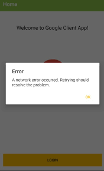

Oryginalna treść i tłumaczenie
EN: Error messages should be expressed in plain language, precisely indicate the problem, and constructively suggest a solution.
PL: Komunikaty błędów powinny być napisane prostym językiem, dokładnie wskazywać problem i sugerować rozwiązanie.
Przykład ze strony internetowej
Źródło: GetResponse – 404 pages
Przykład z aplikacji mobilnej

Źródło: GitHub – GoogleClientPlugin network error